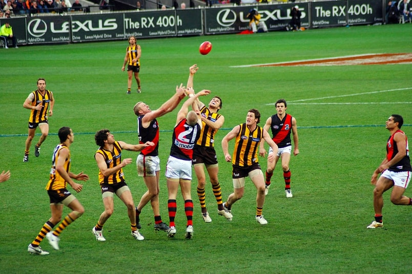

This article is about the overall concept of games called football. For the balls themselves, see Football (ball). For specific versions of the game and other uses of the term, see Football (disambiguation). Football is a family of team sports that involve, to varying degrees, kicking a ball to score a goal. Unqualified, the word football normally means the form of football that is the most popular where the word is used. Sports commonly called football include association football (known as soccer in some countries); gridiron football (specifically American football or Canadian football); Australian rules football; rugby football (either rugby league or rugby union); and Gaelic football.[1][2] These various forms of football are known as football codes.
The various codes of football share certain common elements and can be grouped into two main classes of football: carrying codes like American football, Canadian football, rugby union and rugby league, where the ball is moved about the field while being held in the hands or thrown, and kicking codes such as Association football and Gaelic football, where the ball is moved primarily with the feet, and where handling is strictly limited.[11] Common rules among the sports include:[12] Two teams of usually between 11 and 18 players; some variations that have fewer players (five or more per team) are also popular. A clearly defined area in which to play the game. Scoring goals or points by moving the ball to an opposing team's end of the field and either into a goal area, or over a line. Goals or points resulting from players putting the ball between two goalposts. The goal or line being defended by the opposing team. Players using only their body to move the ball. In all codes, common skills include passing, tackling, evasion of tackles, catching and kicking.[11] In most codes, there are rules restricting the movement of players offside, and players scoring a goal must put the ball either under or over a crossbar between the goalposts.
There are conflicting explanations of the origin of the word "football". It is widely assumed that the word "football" (or the phrase "foot ball") refers to the action of the foot kicking a ball.[13] There is an alternative explanation, which is that football originally referred to a variety of games in medieval Europe, which were played on foot. There is no conclusive evidence for either explanation.
The Chinese competitive game cuju (蹴鞠), as stated by FIFA, is the earliest form of football for which there is scientific evidence and appears in a military manual dated to the second and third centuries BC.[14] It existed during the Han dynasty and possibly the Qin dynasty, in the second and third centuries BC.[15] The Japanese version of cuju is kemari (蹴鞠), and was developed during the Asuka period.[16] This is known to have been played within the Japanese imperial court in Kyoto from about 600 AD. In kemari several people stand in a circle and kick a ball to each other, trying not to let the ball drop to the ground (much like keepie uppie).The Ancient Greeks and Romans are known to have played many ball games, some of which involved the use of the feet. The Roman game harpastum is believed to have been adapted from a Greek team game known as "ἐπίσκυρος" (Episkyros)[17][18] or "φαινίνδα" (phaininda),[19] which is mentioned by a Greek playwright, Antiphanes (388–311 BC) and later referred to by the Christian theologian Clement of Alexandria (c. 150 – c. 215 AD). These games appear to have resembled rugby football.[20][21][22][23][24] The Roman politician Cicero (106–43 BC) describes the case of a man who was killed whilst having a shave when a ball was kicked into a barber's shop. Roman ball games already knew the air-filled ball, the follis.[25][26] Episkyros is recognised as an early form of football by FIFA.[27] There are a number of references to traditional, ancient, or prehistoric ball games, played by indigenous peoples in many different parts of the world. For example, in 1586, men from a ship commanded by an English explorer named John Davis, went ashore to play a form of football with Inuit (Eskimo) people in Greenland.[28] There are later accounts of an Inuit game played on ice, called Aqsaqtuk. Each match began with two teams facing each other in parallel lines, before attempting to kick the ball through each other team's line and then at a goal. In 1610, William Strachey, a colonist at Jamestown, Virginia recorded a game played by Native Americans, called Pahsaheman.[citation needed] On the Australian continent several tribes of indigenous people played kicking and catching games with stuffed balls which have been generalised by historians as Marn Grook (Djab Wurrung for "game ball"). The earliest historical account is an anecdote from the 1878 book by Robert Brough-Smyth, The Aborigines of Victoria, in which a man called Richard Thomas is quoted as saying, in about 1841 in Victoria, Australia, that he had witnessed Aboriginal people playing the game: "Mr Thomas describes how the foremost player will drop kick a ball made from the skin of a possum and how other players leap into the air in order to catch it." Some historians have theorised that Marn Grook was one of the origins of Australian rules football. The Māori in New Zealand played a game called Ki-o-rahi consisting of teams of seven players play on a circular field divided into zones, and score points by touching the 'pou' (boundary markers) and hitting a central 'tupu' or target.[citation needed] Games played in Mesoamerica with rubber balls by indigenous peoples are also well-documented as existing since before this time, but these had more similarities to basketball or volleyball, and no links have been found between such games and modern football sports. Northeastern American Indians, especially the Iroquois Confederation, played a game which made use of net racquets to throw and catch a small ball; however, although it is a ball-goal foot game, lacrosse (as its modern descendant is called) is likewise not usually classed as a form of "football."[citation needed] These games and others may well go far back into antiquity. However, the main sources of modern football codes appear to lie in western Europe, especially England.
The Middle Ages saw a huge rise in popularity of annual Shrovetide football matches throughout Europe, particularly in England. An early reference to a ball game played in Britain comes from the 9th century Historia Brittonum, which describes "a party of boys ... playing at ball".[29] References to a ball game played in northern France known as La Soule or Choule, in which the ball was propelled by hands, feet, and sticks,[30] date from the 12th century.[31] An illustration of so-called "mob football" The early forms of football played in England, sometimes referred to as "mob football", would be played in towns or between neighbouring villages, involving an unlimited number of players on opposing teams who would clash en masse,[32] struggling to move an item, such as inflated animal's bladder[33] to particular geographical points, such as their opponents' church, with play taking place in the open space between neighbouring parishes.[34] The game was played primarily during significant religious festivals, such as Shrovetide, Christmas, or Easter,[33] and Shrovetide games have survived into the modern era in a number of English towns (see below). The first detailed description of what was almost certainly football in England was given by William FitzStephen in about 1174–1183. He described the activities of London youths during the annual festival of Shrove Tuesday: After lunch all the youth of the city go out into the fields to take part in a ball game. The students of each school have their own ball; the workers from each city craft are also carrying their balls. Older citizens, fathers, and wealthy citizens come on horseback to watch their juniors competing, and to relive their own youth vicariously: you can see their inner passions aroused as they watch the action and get caught up in the fun being had by the carefree adolescents.[35] Most of the very early references to the game speak simply of "ball play" or "playing at ball". This reinforces the idea that the games played at the time did not necessarily involve a ball being kicked. An early reference to a ball game that was probably football comes from 1280 at Ulgham, Northumberland, England: "Henry... while playing at ball.. ran against David".[36] Football was played in Ireland in 1308, with a documented reference to John McCrocan, a spectator at a "football game" at Newcastle, County Down being charged with accidentally stabbing a player named William Bernard.[37] Another reference to a football game comes in 1321 at Shouldham, Norfolk, England: "[d]uring the game at ball as he kicked the ball, a lay friend of his... ran against him and wounded himself".[36] In 1314, Nicholas de Farndone, Lord Mayor of the City of London issued a decree banning football in the French used by the English upper classes at the time. A translation reads: "[f]orasmuch as there is great noise in the city caused by hustling over large foot balls [rageries de grosses pelotes de pee][38] in the fields of the public from which many evils might arise which God forbid: we command and forbid on behalf of the king, on pain of imprisonment, such game to be used in the city in the future." This is the earliest reference to football. In 1363, King Edward III of England issued a proclamation banning "...handball, football, or hockey; coursing and cock-fighting, or other such idle games",[39] showing that "football" – whatever its exact form in this case – was being differentiated from games involving other parts of the body, such as handball. "Football" in France, circa 1750 A game known as "football" was played in Scotland as early as the 15th century: it was prohibited by the Football Act 1424 and although the law fell into disuse it was not repealed until 1906. There is evidence for schoolboys playing a "football" ball game in Aberdeen in 1633 (some references cite 1636) which is notable as an early allusion to what some have considered to be passing the ball. The word "pass" in the most recent translation is derived from "huc percute" (strike it here) and later "repercute pilam" (strike the ball again) in the original Latin. It is not certain that the ball was being struck between members of the same team. The original word translated as "goal" is "metum", literally meaning the "pillar at each end of the circus course" in a Roman chariot race. There is a reference to "get hold of the ball before [another player] does" (Praeripe illi pilam si possis agere) suggesting that handling of the ball was allowed. One sentence states in the original 1930 translation "Throw yourself against him" (Age, objice te illi). King Henry IV of England also presented one of the earliest documented uses of the English word "football", in 1409, when he issued a proclamation forbidding the levying of money for "foteball".[36][40] There is also an account in Latin from the end of the 15th century of football being played at Caunton, Nottinghamshire. This is the first description of a "kicking game" and the first description of dribbling: "[t]he game at which they had met for common recreation is called by some the foot-ball game. It is one in which young men, in country sport, propel a huge ball not by throwing it into the air but by striking it and rolling it along the ground, and that not with their hands but with their feet... kicking in opposite directions" The chronicler gives the earliest reference to a football pitch, stating that: "[t]he boundaries have been marked and the game had started.[36] Other firsts in the medieval and early modern eras:

"a football", in the sense of a ball rather than a game, was first mentioned in 1486.[40] This reference is in Dame Juliana Berners' Book of St Albans. It states: "a certain rounde instrument to play with ...it is an instrument for the foote and then it is calde in Latyn 'pila pedalis', a fotebal."[36] a pair of football boots were ordered by King Henry VIII of England in 1526.[41] women playing a form of football was first described in 1580 by Sir Philip Sidney in one of his poems: "[a] tyme there is for all, my mother often sayes, When she, with skirts tuckt very hy, with girles at football playes."[42] the first references to goals are in the late 16th and early 17th centuries. In 1584 and 1602 respectively, John Norden and Richard Carew referred to "goals" in Cornish hurling. Carew described how goals were made: "they pitch two bushes in the ground, some eight or ten foote asunder; and directly against them, ten or twelue [twelve] score off, other twayne in like distance, which they terme their Goales".[43] He is also the first to describe goalkeepers and passing of the ball between players. the first direct reference to scoring a goal is in John Day's play The Blind Beggar of Bethnal Green (performed circa 1600; published 1659): "I'll play a gole at camp-ball" (an extremely violent variety of football, which was popular in East Anglia). Similarly in a poem in 1613, Michael Drayton refers to "when the Ball to throw, And drive it to the Gole, in squadrons forth they goe".